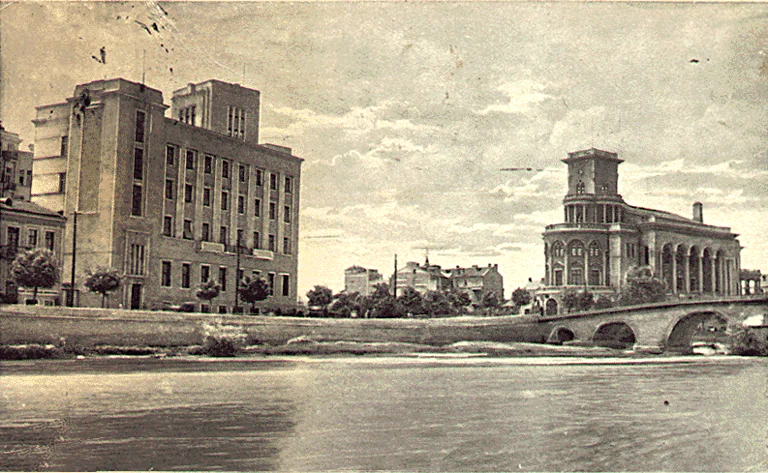
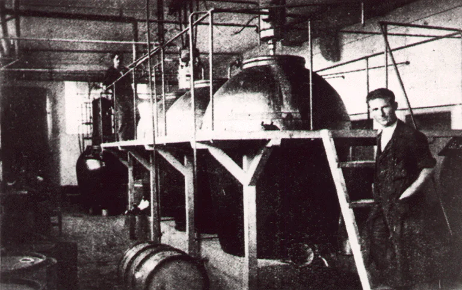
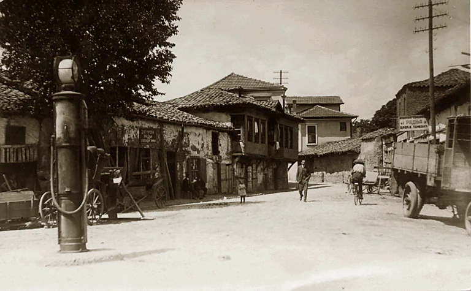
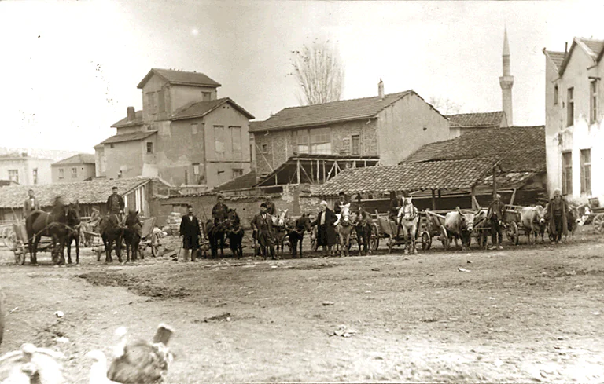
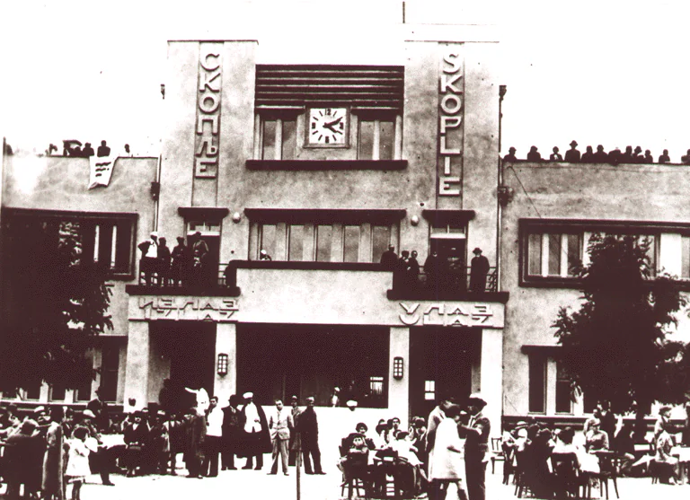
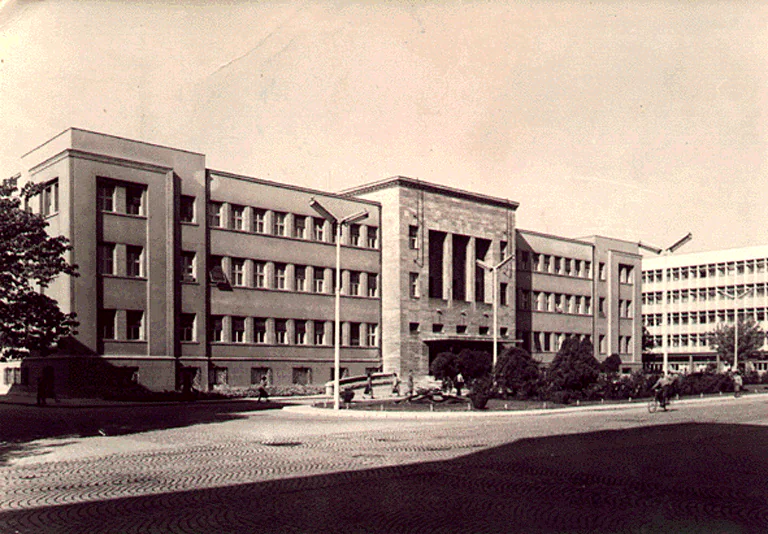
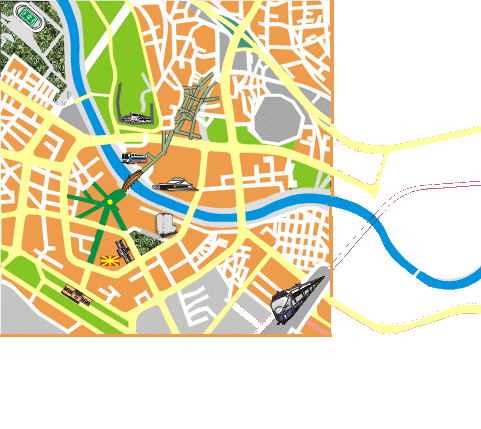

Shkupi 1916 - 1917 panorama 1
Dokumente nga Luftërat Ballkanike
- Viti
- 1916-1917
- Kohëzgjatja
- 00:11

Hotel Turati. Ndërtuar në fund të shekullit XIX.

Fotografia është bërë nga ndërtesa e stacionit të vjetër hekurudhor - Muzeu i sotëm i Qytetit të Shkupit - ndërtuar më 1873 në kohën e Perandorisë Osmane. Në plan të parë është afrimi drejt stacionit, me sipërfaqe të gjelbra të rrethuara. Më tej është rruga kryesore që të çon te sheshi. Në fillim të rrugës majtas është hoteli "Rusija".

Pamje drejt rrugës kryesore "Makedonija". Porta është ngritur për nder të një mysafiri të rëndësishëm. Majtas saj është hoteli "Rusija". - fillimi i shekullit XX.

Ndërtesa e gjykatës, vitet 1920.

Ndërtesa e gjykatës, vitet 1920.

Ndërtesa e komunitetit hebre - vitet 1920.

Shtëpia e motrave serbe - vitet 1920.

Shkupi pas vitit 1930. Pamje e rrugës kryesore, nga Muzeu i sotëm i Qytetit të Shkupit drejt sheshit. Dy ndërtesat më të larta janë Grand Hoteli "Bristol" dhe, djathtas tij, hoteli "Srpski Kralj", me elemente arkitektonike eklektike.

Hotelet Srpski Kralj dhe Bristol. - vitet 1920.

Shtëpia e vëllezërve Čitkušev. - vitet 1920

Shtëpia e farmacistit Ristić, e quajtur popullorisht Pallati i Ristićit. Majtas në fotografi duket një pjesë e hotelit "Bel Orel". (vitet 1920)

Pallati i Ristićit - rreth vitit 1925.

Pallati i Ristićit. Majtas në fotografi duket një pjesë e hotelit "Bel Orel". (rreth vitit 1925)

Hotel "Pariz". Fotografohet oborri i hotelit, ku ndodheshin një birrari dhe një ëmbëltore. - vitet 1920

Hotel "Moskva" - vitet 1930

Banka Osmane - rreth vitit 1910.

Sheshi i vogël, pranë Urës së Gurit, në bregun e majtë të Vardarit. Në plan të parë është monumenti i të rënëve në Luftërat Ballkanike, dhe prapa djathtas Banka Osmane.
- vitet 1920

Hoteli i ri "Sarajevo" në ndërtim - në shesh. Majtas tij është kafeneja e teatrit, dhe mbi të hoteli i vjetër "Sarajevo". - vitet 1920

Sheshi me hotelin "Sarajevo" dhe kafenenë popullore "Marger", vendi i preferuar i qytetarëve të Shkupit. Majtas hotelit "Sarajevo" ishte hoteli "Obedinuvanje". Në plan të parë, në trotuar, ulet një shitës simitesh. (rreth vitit 1935)

Kazerma e Kalasë së Shkupit. - vitet 1920

Ndërtesa e burgut në Shkup. Ndodhej pranë Xhamisë së Mustafa Pashës. - fundi i shekullit XIX

Hyqymeti (komuna). Pranë tij është posta turke, dhe pas saj Xhamia e Mustafa Pashës. - vitet 1920

Hyqymeti (komuna). Pranë tij është posta turke. Në sfond duket Xhamia e Mustafa Pashës. - vitet 1920

Hyqymeti (komuna). Pranë tij është posta turke, dhe pas saj Xhamia e Mustafa Pashës. - vitet 1920

Ndërtesa e inspektoratit financiar. Sot aty është Instituti i Metaleve të Çmuara. Në periudhën turke ishte "Hyqymeti" (komuna). - vitet 1930

Salla e gjimnastikës, ose shtëpia e sokolëve të Shkupit "Sokolana", ndërtuar më 1936.

Shtëpia e sokolëve në Shkup, ndërtuar më 1936.

Spitali ushtarak "Gjysmëhëna e Kuqe" - fundi i shekullit XIX. Ndërtesa dallohet për stilin akademik me forma të Rilindjes dhe të barokut.

Spitali ushtarak "Gjysmëhëna e Kuqe", ndërtuar në fund të shekullit XIX, në stil akademik me forma të Rilindjes dhe të barokut. (vitet 1920)

Spitali ushtarak "Gjysmëhëna e Kuqe", ndërtuar në fund të shekullit XIX.

Spitali ushtarak "Gjysmëhëna e Kuqe", ndërtuar në fund të shekullit XIX.

Pamje e rrugës kryesore, nga Muzeu i sotëm i Qytetit të Shkupit drejt sheshit. Pallati Kranga, me elemente klasike e barokë, ku ishte kinemaja "Capitol". Në sfond të fotografisë duket Shtëpia e Oficerëve. - vitet 1930

Sanatoriumi "Vardar" - vitet 1930

Shtëpia e dentistit Dr. Ruben, që kishte ambulancën pranë Urës së Gurit në bregun e majtë të Vardarit. - vitet 1930

Ndërtesa e postës. - vitet 1930

Banka Kombëtare, ndërtuar sipas projektit të arkitektit B. Nestorović: akademizëm i thjeshtëzuar në elementet dekorative dhe ndikime të modernizmit. - vitet 1930.

Banka Kombëtare natën. Para saj, pjesë e shëtitores së qytetarëve të Shkupit, e quajtur popullorisht "Korzo". - vitet 1930.

Banka Kombëtare, ndërtuar sipas projektit të arkitektit B. Nestorović: akademizëm i thjeshtëzuar në elementet dekorative dhe ndikime të modernizmit. Djathtas është Oda Ekonomike-Tregtare (arkitekt M. Zloković) - vitet 1930.

Ura e Gurit me Bankën Kombëtare në sfond. - vitet 1930

Banka Kombëtare, Shtëpia e Oficerëve dhe një pjesë e Urës së Gurit. - vitet 1930

Banka Kombëtare me Shtëpinë e Oficerëve dhe Urën e Gurit. Fotografuar nga bregu i majtë i Vardarit, nga sheshi i vogël ku qëndronin karrocat me kuaj. (vitet 1930)

Gjimnazi i vjetër i vajzave. - vitet 1930

Centrali termoelektrik në Shkup - 1910

Brendia e centralit termoelektrik në Shkup - 1910

Fabrika e barnave. - vitet 1920.

Pika e parë e karburantit "Shell" në Shkup. - 1927

Stërvitje e zjarrfikësve të Shkupit. - vitet 1930.

Punishte tipike rrobaqepësie në çarshinë e vjetër - 1920

Vend qëndrimi i karrocierëve me qerre me kuaj. - vitet 1920

Fabrika e përpunimit të lëkurës në Shkup. - vitet 1920.

Gurorja në Shkup, në Kisella Vodë, në shpatet e Vodnos. - vitet 1920.

Aeroporti pranë Shkupit - 1933. Ndodhej në vendin e lagjeve të sotme Aerodrom dhe Jane Sandanski.

Hipodromi në Shkup. (fundi i viteve 1920)

Kinemaja "Vardar" - vitet 1940. Midis dy luftërave botërore Shkupi kishte këto kinema: Zrinjski, Apollo (u dogj më 1930, dhe në vendin e saj u ndërtua kinemaja Korzo), Balkan, Vardar, Capitol, Urania dhe Avala.

Monumenti i nxënësve të rënë në Luftën e Parë Botërore - vitet 1920.

Barnatorja e qytetit. - 1932.

Enti i Sigurimit të Punëtorëve (Spitali i sotëm i qytetit). - vitet 1930

Kuvendi i Republikës së Maqedonisë, vitet 1940. Në ato vite ishte drejtoria krahinore.

Kuvendi i sotëm i Republikës së Maqedonisë - vitet para tërmetit.

Stara - Nova Banja. Pjesë e Shkupit në vendin e Universitetit të sotëm "Shën Kirili dhe Metodi"

Ndërtesa e Administratës së Punëve të Brendshme, ndërtuar në vitet 1950. Më vonë aty u vendosën fakultetet juridik, ekonomik e filozofik dhe rektorati.

Pallati i Drejtësisë, menjëherë pas tërmetit. Pranë tij majtas është xhamia e vjetër "Elen Kapan".

Ndërtesa e ndërmarrjes elektrike (1962-1964), pranë sheshit të qytetit.

Qendra tregtare e qytetit. Ndërtimi filloi zyrtarisht më 11 tetor 1969, ndërsa pjesa qendrore u hap më 27 prill 1973; që atëherë funksionon si kompleks.

Qendra tregtare e qytetit (1969 - 1973) me një pjesë të parkut "Gruaja luftëtare".

Qendra tregtare e qytetit (1969 - 1973) me hapësirën e rregulluar të parkut "Gruaja luftëtare".

Dokumente nga Luftërat Ballkanike
Revista filmike nr. 21
 Ujësjellësi4 kartolina
Ujësjellësi4 kartolina Kalaja30 kartolina
Kalaja30 kartolina Urat60 kartolina
Urat60 kartolina Kej58 kartolina
Kej58 kartolina Sheshi46 kartolina
Sheshi46 kartolina Ndërtesat66 kartolina
Ndërtesat66 kartolina Kishat e krishtera19 kartolina
Kishat e krishtera19 kartolina Objektet myslimane33 kartolina
Objektet myslimane33 kartolina Shtëpia e Oficerëve29 kartolina
Shtëpia e Oficerëve29 kartolina Teatri28 kartolina
Teatri28 kartolina Stacioni hekurudhor13 kartolina
Stacioni hekurudhor13 kartolina Shkollat36 kartolina
Shkollat36 kartolina Parqet12 kartolina
Parqet12 kartolina Tregjet18 kartolina
Tregjet18 kartolina Rrugët38 kartolina
Rrugët38 kartolina Panorama I60 kartolina
Panorama I60 kartolina Panorama II30 kartolina
Panorama II30 kartolina Kolazhe55 kartolina
Kolazhe55 kartolina Përmbytjet9 kartolina
Përmbytjet9 kartolina Tërmeti27 kartolina
Tërmeti27 kartolina Shkupi 200026 kartolina
Shkupi 200026 kartolina